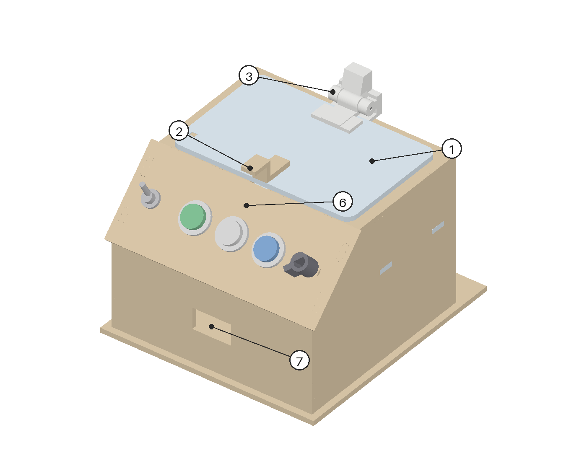

ROBOT AS A VERIFIERGive RAAV a prototype, its manual and its CAD if you have one. A low-cost robot arm finds every control, tests it with capped force, and reports what it measured. A fix only counts if the score goes up.

From a prototype it has never seen to a scored revision, with a person approving each step that matters.
One wrist camera. OWLv2 finds parts, SAM 2.1 outlines them, a touch pins each one down.
A model drafts the steps. A person approves before anything moves.
Press, flip, turn, hook-pull. Verdicts come from sensors, not the model.
An analyst edits the faulty part and must pass geometry checks. A person approves.
Same plan on Rev B. Keep the fix only if the reward rises.
Software has verifiers, so a model can propose thousands of attempts and keep only the ones that check out. Hardware has nothing like it, so failures surface late.
The LLM plans and explains. It can't move a joint, override a verdict or approve its own patch.
Lab instruments, pumps, meters. “Usable with no thumbs” or “opens under 5 N” become tests the robot runs on every revision.
So a model that designs physical things improves against real tests, not its own opinion of its work.
The analyst never saw the designer's own fix, and landed within 0.2 mm of it.
| Model via Cortex | Tokens | Tool errors | Median turn |
|---|---|---|---|
| Claude Haiku 5.5 | 388,590 | 1 | 3.4 s |
| Claude Sonnet 5.5 | 243,671 | 3 | 2.5 s |
| GPT-5.4 | 157,810 | 4 | 2.8 s |
| Grok 4.7 | 221,060 | 3 | 2.9 s |
110 of 115 attempted tests passed, with 0 false failures.